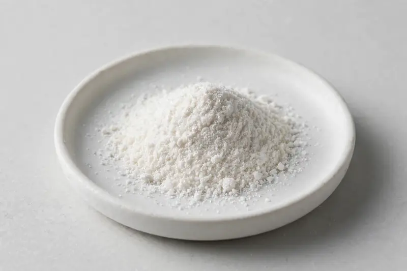

D-Biotin — a water-soluble vitamin positioned for beauty-from-within hair, skin and nail formulation concepts.

Overview
Biotin Powder is D-biotin, a water-soluble B-complex vitamin widely used across the supplement and beauty-from-within categories. It is commonly traded at 99%+ purity, appearing as a white crystalline powder. Formulators use it in capsules, gummies and tablets positioned around hair, skin and nail concepts. Demand has grown alongside the beauty-from-within trend. HerbChina Extracts is a Xi'an-based trading company sourcing through vetted partner producers; buyers share a target spec and we confirm feasibility honestly.
Specifications below reflect commonly requested options in the market — not a stock list. Share your target spec and we'll confirm exactly what we can supply, honestly.
| Specification | Details |
|---|---|
| Botanical identity | D-Biotin (vitamin B7) powder |
| Marker compound | Commonly requested spec grades: 99%+ by HPLC; 1% and 2% triturations also circulate for gummy and beverage formats |
| Appearance | White to off-white fine powder |
| Analytical methods | Methods referenced in buyer specifications: HPLC |
| Mesh size | Typically 80–100 mesh (confirm per inquiry) |
| Testing | COA/TDS arranged on request; scope agreed per your spec |
Applications
Documentation
We don't claim in-house labs or certifications we don't hold. COA and TDS documents can be arranged on request, and testing scope is agreed against your specification before supply.
FAQ
Related products
Nattokinase (fermented soybean enzyme)
Key marker: 20,000-40,000 FU/g
View specs →Spermidine (wheat germ-derived polyamine)
Key marker: 0.5-1% Spermidine
View specs →Phosphatidylserine
Key marker: 20-50% PS
View specs →Cassia obtusifolia
Key marker: Anthraquinone grades
View specs →Asparagus racemosus
Key marker: Saponin grades
View specs →Buyer guides
Buyer’s guide
Identity, actives, heavy metals, micro — what each section of a Certificate of Analysis means, and the red flags that tell you to walk away.
Read the guide →Buyer’s guide
Section-by-section COA walkthrough — marker assays, heavy metals, micro panels, red flags, and a buyer checklist.
Read the guide →Send your target spec and volumes — we'll respond with a tailored quotation.
Request a Quote